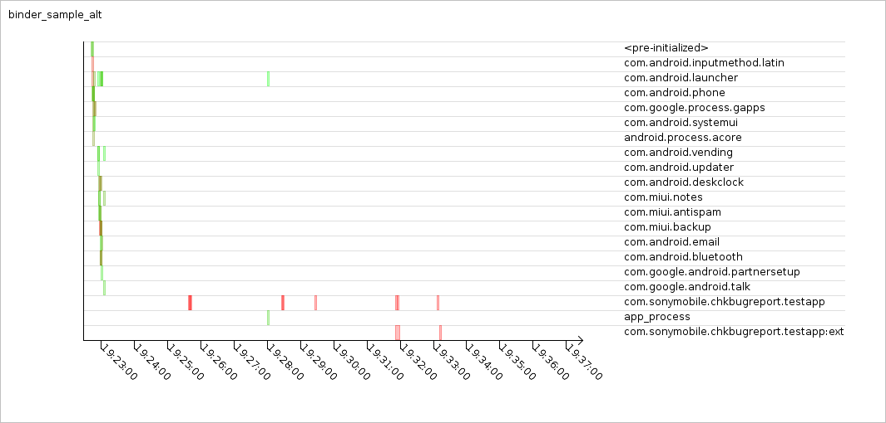
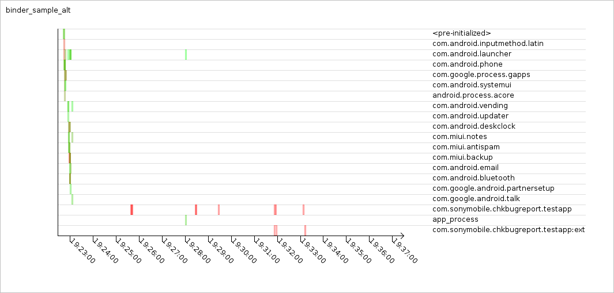
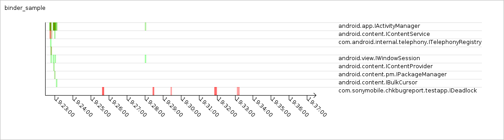
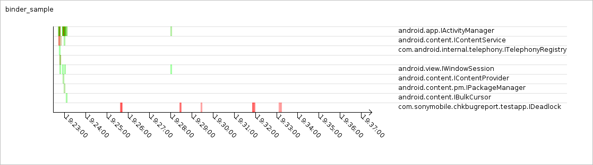

Graph built from content_update_sample logs:
Graph built from content_query_sample logs:
Graph built from dvm_lock_sample logs:
Graph built from binder_sample_alt logs:
Graph built from db_sample logs:
Graph built from binder_sample logs:

 
 
